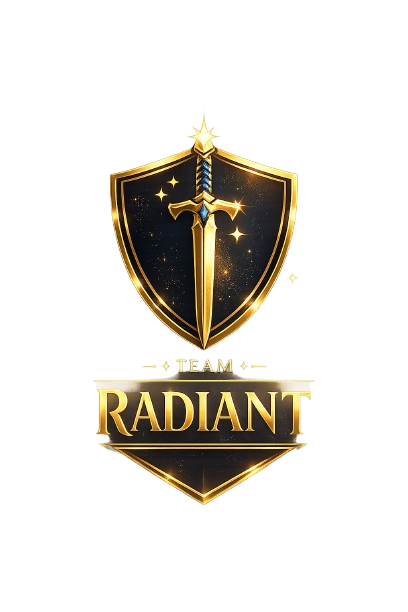

Website edukasi karya Team Radiant yang membahas pengaruh teknologi dalam pembelajaran modern serta menampilkan project digital EduTrack Pro.
Lihat Project Kami Coba GamesPerkembangan teknologi telah membawa perubahan besar dalam dunia pendidikan. Teknologi memudahkan akses informasi, meningkatkan kreativitas, serta membuat proses pembelajaran menjadi lebih interaktif, fleksibel, dan efektif.
Project ini dibuat untuk memberikan pemahaman mengenai pengaruh teknologi dalam pembelajaran modern serta menunjukkan bagaimana teknologi dapat dimanfaatkan untuk menciptakan solusi digital yang membantu proses belajar.
Melalui website ini, kami juga memperkenalkan EduTrack Pro, yaitu aplikasi rapor digital yang dikembangkan untuk membantu siswa memantau perkembangan nilai dan hasil belajar secara digital.
Membuat desain visual, layout, warna, dan tampilan website agar terlihat menarik.
Mengembangkan EduTrack Pro, mengatur konsep project, dan membantu pengembangan fitur digital.
Mengembangkan website menggunakan HTML dan CSS serta menyusun tampilan halaman.
Membantu menyusun isi materi, informasi, serta penjelasan yang ditampilkan pada website.
Menjadi tim yang mampu memanfaatkan teknologi secara kreatif untuk menghasilkan solusi digital yang bermanfaat dalam dunia pendidikan serta memberikan dampak positif bagi proses pembelajaran di era modern.
Materi digital dapat diakses kapan saja dan di mana saja.
Sumber belajar tersedia melalui internet dan platform edukasi.
Teknologi membuat pembelajaran lebih menarik dan tidak monoton.
Siswa dapat belajar sesuai kemampuan dan kecepatannya masing-masing.
Anggota Tim
Website Edukasi
Aplikasi EduTrack Pro
Tahun Pengembangan
EduTrack Pro adalah aplikasi rapor digital berbasis Python dan Streamlit yang dikembangkan oleh Team Radiant untuk membantu siswa memantau perkembangan akademik secara modern, cepat, dan interaktif.
Aplikasi ini telah berhasil di-deploy secara online sehingga pengguna dapat langsung mencoba aplikasi melalui browser tanpa perlu menginstal Python.
Membangun tampilan website Team Radiant.
Menambahkan interaksi seperti game Tic Tac Toe.
Bahasa utama untuk membangun EduTrack Pro.
Framework untuk membuat aplikasi web EduTrack.
Mengolah data nilai dan membuat grafik interaktif.
Menyimpan source code dan dokumentasi project.
Fitur game sederhana ini dibuat untuk menambahkan unsur interaktif pada website Team Radiant. Pemain X dan O dapat bermain secara bergantian.
Giliran: X
Pertanyaan: Teknologi dalam pembelajaran dapat membantu siswa untuk...
Terima kasih telah mengunjungi website kami. Jika Anda memiliki pertanyaan, saran, atau masukan mengenai project ini, silakan hubungi kami melalui WhatsApp.
Lead Programmer & Project Coordinator
Team Radiant ⚔️